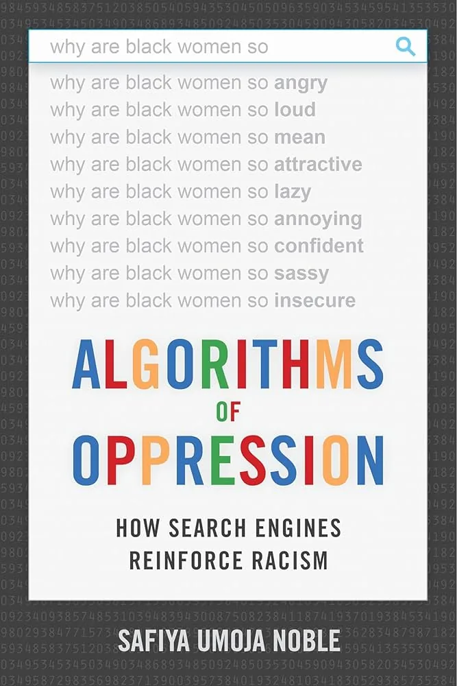
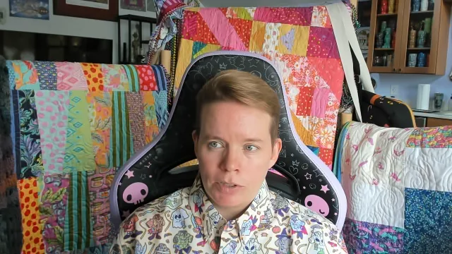
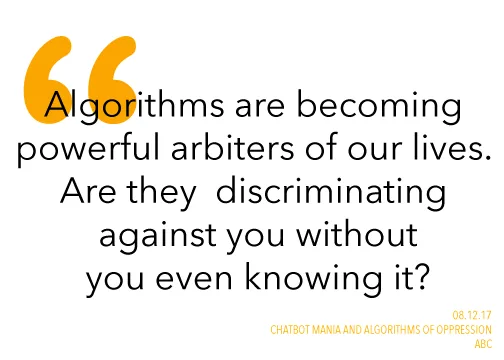
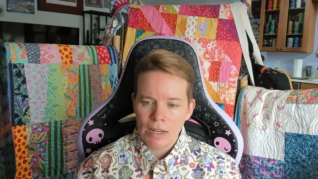
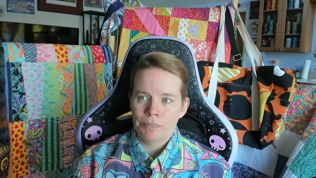
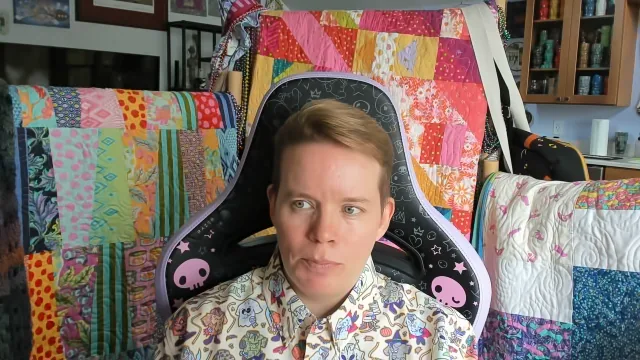
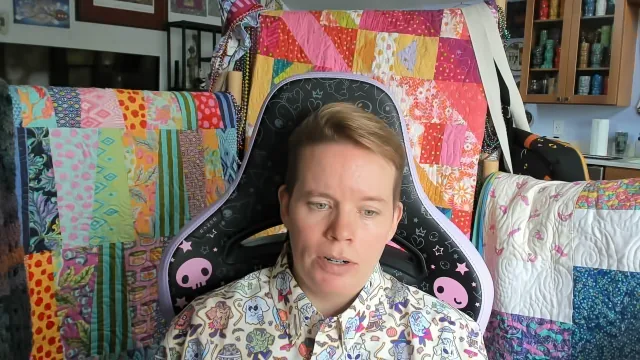

Playful Approaches, Creative Code, AI Policy
Tuesday, July 8, 2026 · 10 AM – noon · CHDR
Part 1
Refik Anadol does it. Mark Sample does it. Allison Parrish does it. Play makes the labor of iteration visible and survivable.
Live demo
I build something small and a little strange — a memorial, a generator, a recommender for an obscure corpus. Watch how the dataset shapes the design.

Exercise
Use Claude Code Web. Deploy via GitHub Pages.

Part 4
Pivot to the syllabus question. Working in pairs, draft (or revise) a one-page course AI policy.

The most common mistake in AI policies is treating them as a fence. The students who most need clear AI guidance are the ones least likely to ask. A policy framed as invitation (here is when AI use is welcome, here is how to attribute it, here is what to do if you are unsure) reaches those students. A policy framed as prohibition drives them underground.
— Pedagogical note for Workshop 5

Exercise
One page. Bring it to the discussion at minute 105.
Algorithms aren't neutral. They reflect the people who build them, the data that train them, and the contexts they're deployed in.
— Safiya Umoja Noble, My Robot Teacher podcast

Part 5
Trade with the person next to you. Read for the invitations. Read for the enforcement spots that hide in the language. Read for what's missing.


Delight, weirdness, and clarity over scale. The tool you built today doesn't have to scale. It has to belong to your students.